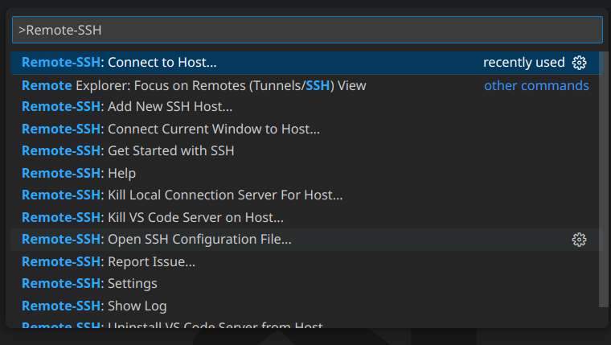

Remote SSH
Remote ssh allows you to connect to a remote server running a SSH server. You will be able to browse, modify and execute remote files. VS Code will install a server on the remote machine which will allow you to use most of the local features on the remote machine.
System Requiremnts:
Local
- Openssh client
Remote
- SSH server running
- 1gb RAM
- 2 core CPU
VS Code Extensions
- Remote SSH - Microsoft
- (Optional) Remote development - Microsoft
Connect:
- Open VS Code on the client
- Run the command Remote-SSH: Connect to host 
- You will be prompted to add a new host if this is your first time
- Enter your username@server_address.com
- If you have already added a host, it will ask for your password
- Once you have entered your password you will be able to login to your server
Open remote files and folders with VS Code:
- Connect to Remote SSH
- File -> Open file
- FIle -> open folder